| Aceraceae |
Maple, Sycamore |
‘Radioactive’. Round. Sometimes bark-like exine.
cf. OSR, Rosaceae, Rubus |
 |
| Apiaceae |
Carrot/Hogweed |
Cylindrical, raised central pores.
cf. Fabaceae, Knapweed, Chestnut |
 |
| Asteraceae |
Daisy |
Finer spikes/hairs/dots. |
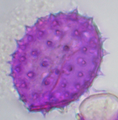 |
|
Dandelion |
Spiky hexagon shells. |
 |
|
Thistle |
Broad, triangular spikes. |
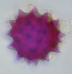 |
| Crocus |
|
Massive thick-walled sphere. (100um) |
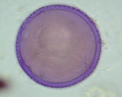 |
| Heathers |
Erica |
Tetrad - 4 grains: 3 plus 1 on top or underneath. |
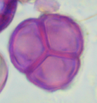 |
|
Ling |
Tetrad - 4 grains: ‘clumped’. |
 |
| Grains and Grasses |
|
Round, single pore. |
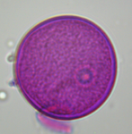 |
| Hazel |
|
Round with ‘teat’ pores (25um).
cf. Lime, Honeysuckle |
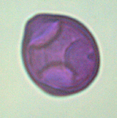 |
| Himalayan Balsam |
|
Rectangle with slashed corners. ‘Saltire’ |
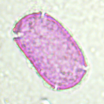 |
| Honeysuckle |
|
Rounded triangle, spikes, corner pores.
cf. Hazel, Honeysuckle |
 |
| Liliaceae |
Alliums, Lilies |
Long ‘folded’ furrow. Like slashed bread |
 |
| Malvaceae |
Lime (Tilia) |
3 indented/cut-in pores.
cf. Hazel, Honeysuckle |
 |
|
Mallow |
Massive, spiky ‘sea mines’. (100um).
cf. Hollyhock |
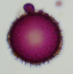 |
| ‘Mediterranean’ Herbs |
Thyme |
Hexagons with ‘spoked’ furrows.
cf. Phacelia |
 |
| OSR |
|
‘Radioactive’ netted flattened sphere.
cf. Aceraceae, Rosaceae, Rubus |
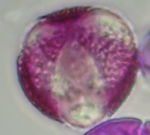 |
| Phacelia |
|
Striped ‘Beachball’.
cf. Thyme |
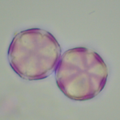 |
| Pinus |
Pine |
Air sacs. ‘Teddy Bear head’. |
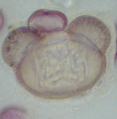 |
| Privet |
|
Netted, 3 pores: droplet-like, sometimes yellow.
cf. Ivy, Holly |
 |
| Ribes (Currant/Gooseberry) |
|
Round, 6+ round/bubble pores. |
 |
| Rosaceae |
Rubus (Blackberry/Raspberry) |
‘Radioactive’.
cf. Acer, OSR, Rubus |
 |
|
‘Top Fruit’ (Apple/Plum/Pear etc) |
‘Radioactive’.
cf. Acer, OSR, Rosaceae |
 |
| Willowherb |
|
‘Bubbly’ - Large, spherical with 3 swollen pores (75um).
Example image shows yeast-damage |
 |
|
|
https://mrichar1.github.io/pollen_id/ |
|